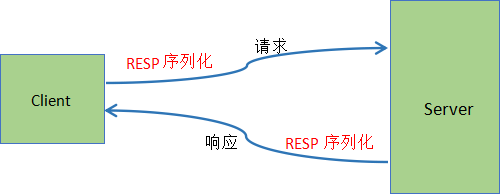

Redis连接命令详解
Redis 连接命令是主要用于验证 Redis 服务器的连接状态，比如验证客户端与 Redis 服务器是否连接成功，以及检查服务器运行状态，以及是否断开当前连接等。
我们知道，只有当客户端与服务器正常连接后才能够实现彼此的交互、通信。Redis 通过“Redis序列化协议”（简称“RESP”），实现客户端与服务端之间的连接通信，该协议主要包括两个部分：网络模型和序列化协议。
由此可知，客户端与服务端交互的数据是以序列后的协议数据进行传输的。
下面是一个简单的
在线练习工具：https://try.redis.io/
查看更多 Redis 命令：https://redis.io/commands
我们知道，只有当客户端与服务器正常连接后才能够实现彼此的交互、通信。Redis 通过“Redis序列化协议”（简称“RESP”），实现客户端与服务端之间的连接通信，该协议主要包括两个部分：网络模型和序列化协议。
- 网络模型主要负责数据交互的组织方式；
- 序列化协议则实现了数据的序列化；
由此可知，客户端与服务端交互的数据是以序列后的协议数据进行传输的。
下面是一个简单的
请求/响应示意图，如下所示：

图1：Redis客户端与服务器交互
图1：Redis客户端与服务器交互
Redis连接命令
| 命令 | 说明 |
|---|---|
| AUTH password | 验证密码是否正确 |
| ECHO message | 打印字符串 |
| PING | 查看服务是否运行正常 |
| QUIT | 关闭当前连接 |
| SELECT index | 切换到指定的数据库 |
连接命令应用
1) 建立连接
在确认 Redis 已经成功配置之后，（可参考《Windows下载安装 Redis》）开启一个客户端与服务器的连接，执行以下命令：
C:\Users\Administrator>redis-cli 127.0.0.1:6379>
2) 验证连接
下面看一组实例演示：
#通过配置文件或者或者config命令配置客户端连接密码 redis 127.0.0.1:6379> CONFIG SET requirepass 123456 OK #验证给定的密码和配置文件密码是否一致 redis 127.0.0.1:6379> AUTH 123456 OK #检测客户端与服务器是否连接正常 redis 127.0.0.1:6379> PING PONG #切换到2库 127.0.0.1:6379> SELECT 2 OK 127.0.0.1:6379[2]> ECHO "hello www.biancheng.net" "hello www.biancheng.net" #中断连接 127.0.0.1:6379> QUIT C:\Users\Administrator>上述示例，通过
AUTH命令验证密码，从而证明了客户端已经连接到了 Redis 服务，然后我们使用 PING 命令来检测服务器运行是否正常。在线练习工具：https://try.redis.io/
查看更多 Redis 命令：https://redis.io/commands
关注公众号「站长严长生」，在手机上阅读所有教程，随时随地都能学习。内含一款搜索神器，免费下载全网书籍和视频。

微信扫码关注公众号